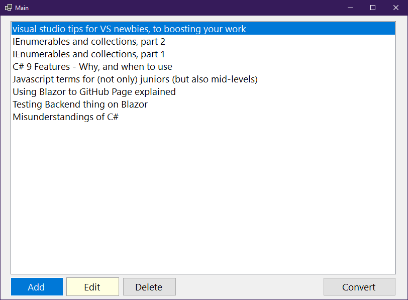
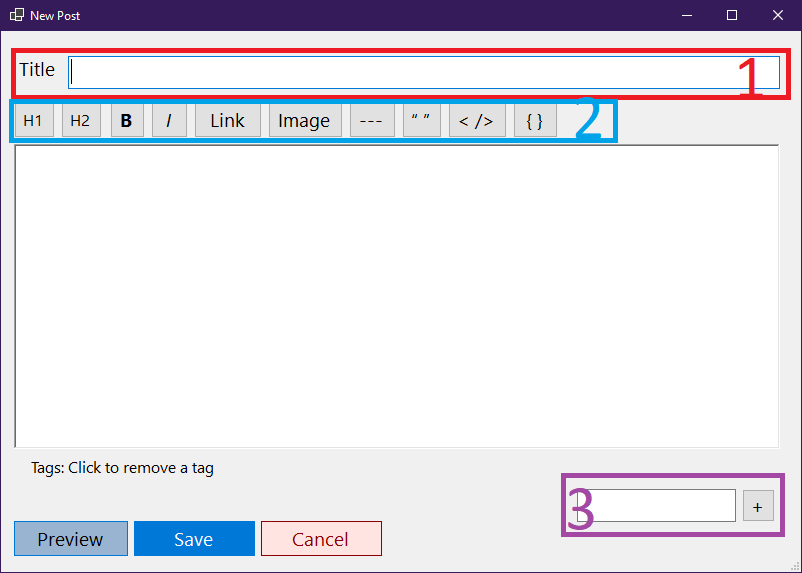

Editing with editor
Note: The editor is available only in Windows.
Note: This editor can be replaced in future. Currently it's buggy for displaying (e.g. tags), but should work functionally.

When you open the app, it will look like this. If the input file format is wrong, it won't open the app. In this case, open input path (default inputs/contents) and change files manually.
Adding new post
- To write new article, click Add button.

- This is title field.
- This is tools title. Since it's markdown, this provides some little help to write the markdown syntax. The writing field doesn't work as WYSYWIG editor.
- [ H1 ]: Click this to make current line to header.
- [ H2 ]: Click this to make current line to header, but smaller than H1.
- [ B ]: Click this to make selected text bolder, as the button shows.
- [ I ]: Click this to make selected text italic, as it shows.
- [ Link ]: Add link to selected text. Title means the text to be shown, when the cursor is on, in the website.
- [ Image ]: Select image from file path (It's on
filesdirectory, relative to input path(default:inputs/contents): If you didn't change setting, it's oninputs/contents/files). Currently it doesn't support subdirectory, but you can put it manually - the converter supports subdirectory. - [ --- ]: Draws horizon line. If you want horizon on result, don't put additional text on the same line as ---.
- [ > ]: Writes quote.
- [ < /> ]: Writes code. This is recommended inline, which will result like:
abcde. If the code is real source code (of specific language), use [ { } ] button. - [ { } ]: Adds template to write language. This can be e.g. programming language or markup langugae (HTML). Spoken language is not supported.
- Add the tag. Write tag on the input field and click [ + ] to add tag. Then you'll see the yellow tag label. Click it to remove the tag.
Note: File path will be automatically relative to blog's base path.
Click [ Preview ] to see how does it look (in default HTML format).
Click [ Save ] to save the post.
Click [ Cancel ] to exit the app. This will do same thing as closing the window.
Note: Beautifying the format and using the extended markdown features are completely depended on the blog that uses end result - The converting result still has markdown syntax.
Edit existing post
- To edit existing article, click Edit button. The edit window will look same as adding post window, but does almost identical thing to writing to the new post window, except it edits the existing post instead of adding new post.
Delete existing post
- To delete a post, select the post to delete and click [ Delete ] button.
Converting post
When your posts are ready, click [ Convert ] to convert. The default output path is same as the editor path. You may need this help to understand the input/output structure.